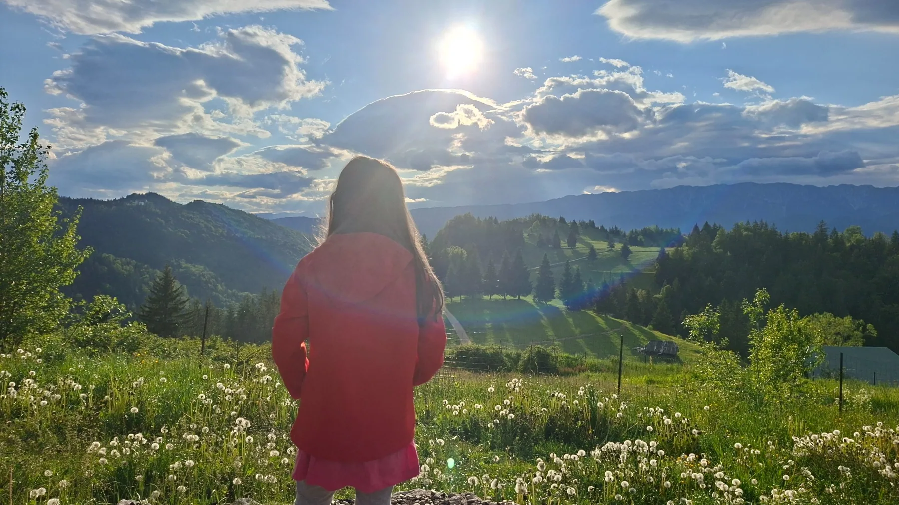
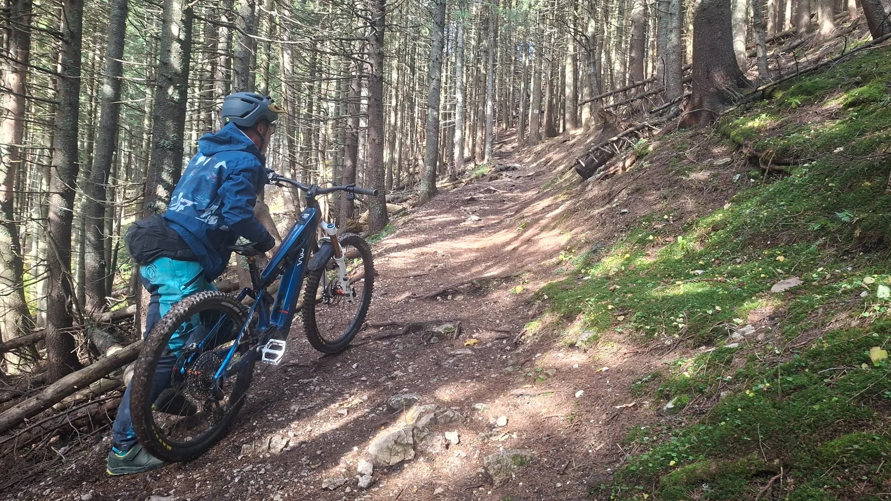

Rutas panorámicas en coche
Recorre las carreteras de montaña entre Bran y Moieciu, con paradas para disfrutar de los pueblos y hacer fotos.
Descubre algunas rutas privadas con recogida y regreso a tu alojamiento. Elige lo que te apetezca y organizamos un día a tu ritmo.
Recorre las carreteras de montaña entre Bran y Moieciu, con paradas para disfrutar de los pueblos y hacer fotos.

Pasea entre portones de madera, prados de heno y las casas dispersas de Măgura y Peștera.

Podemos dedicar el día al castillo de Bran o hablar de Peleș, Râșnov y otros rincones tranquilos por el camino.

Reserva tiempo para comer en un pueblo y probar quesos de la zona y una porción de tarta casera.

Elige un paseo tranquilo por el bosque o una ruta de montaña más larga, según tu ritmo.

Aprovecha la última hora de luz en las colinas de Moieciu. Lleva la cámara y algo de abrigo.

Recorre el desfiladero bajo las paredes de caliza de Piatra Craiului.

Pregúntame por los paseos cerca de Râșnov con un centro ecuestre local.

Podemos incluir una parada en la tirolina durante la visita a los pueblos, según disponibilidad.

Pregúntame por las sesiones de escalada con un especialista de la zona.

Podemos parar en Cheile Grădiștei para probar el trineo sobre raíles cuando esté abierto.

Organizamos los traslados, las noches en ruta y el recorrido por Brașov o los montes Apuseni.